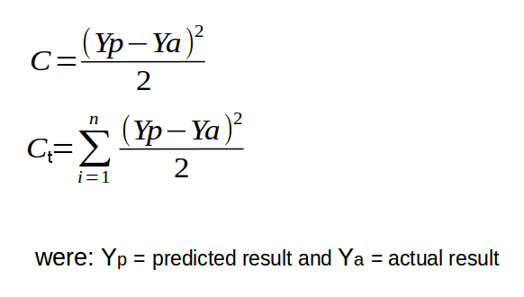
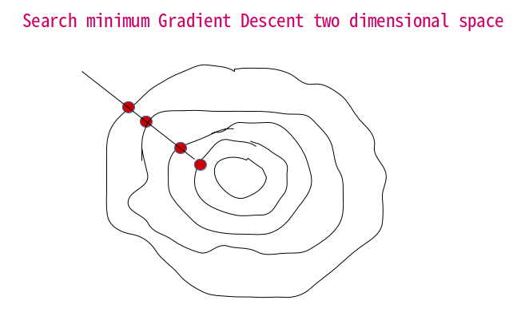
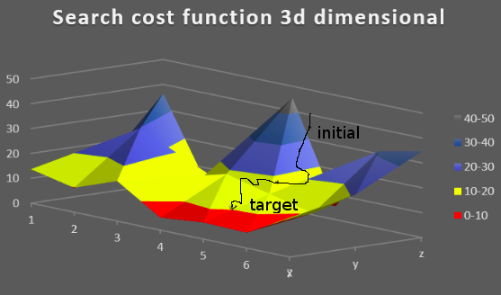
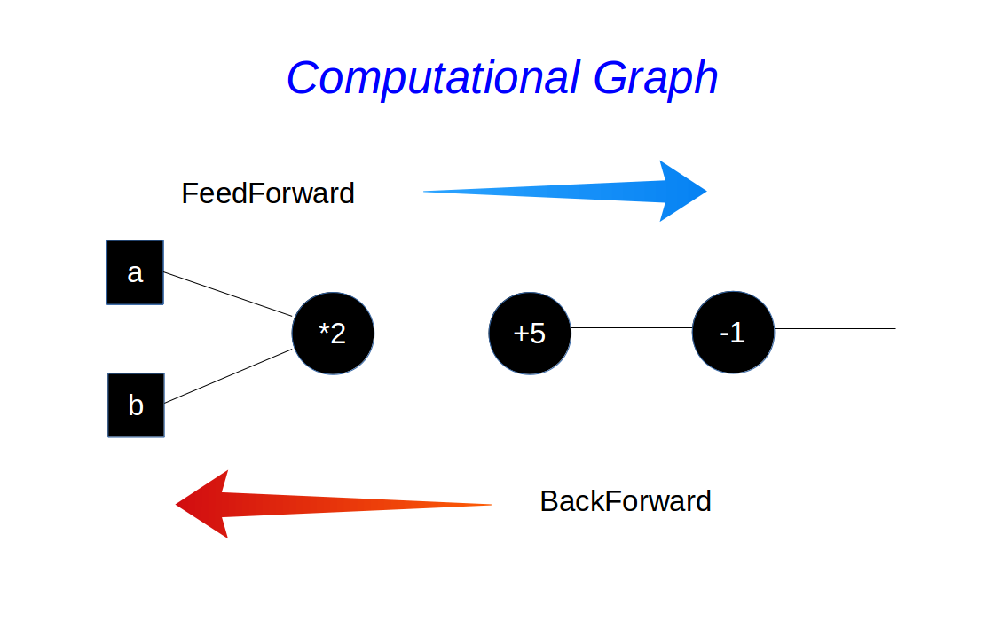
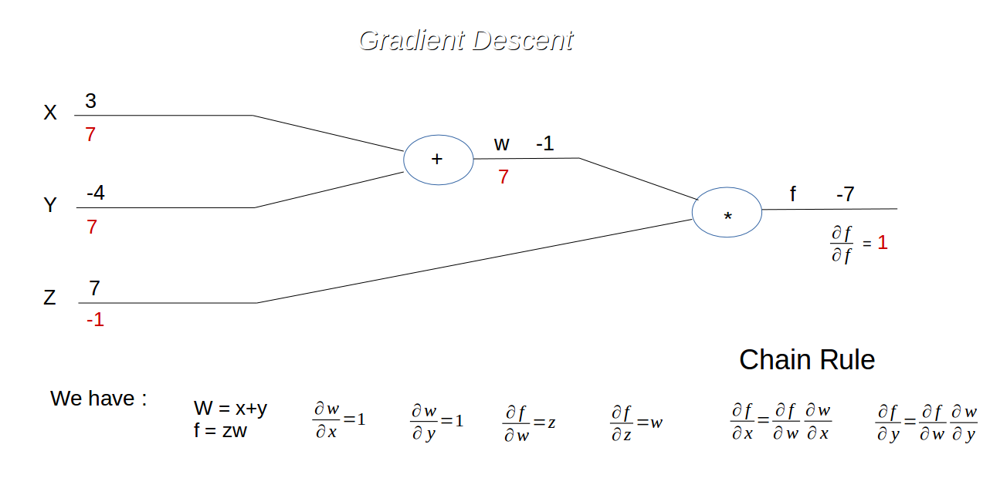
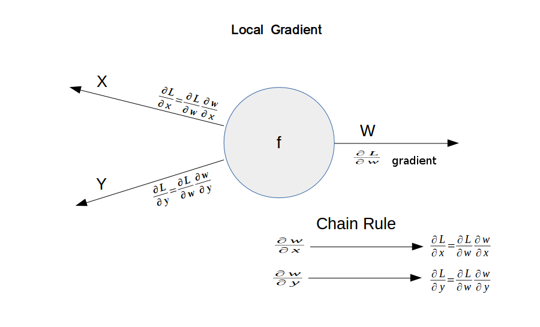
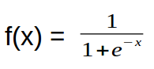

Backpropagation is a backward propagation of errors and is a powerful tool of the deep learning. With the Gradient Descent the backpropagation reduce the cost function and the time of execution. We now talk about of calculate the Gradient
Descent.
Gradient Descent
With the Gradient Descent we want find the weights that minimize the errors, the cost function, through some iterations for search the minimum. There are 2 method, the Batch Gradient Descent and the Stochastic Gradient Descent.
The first, the Batch Gradient Descent, is a deterministic method that start always with the same data and produce the same outcome. It calculate the cost function of all the input data and then update the weights through the Backpropagation.
This process is very expensive in time and resources for load all data in memory for found the best cost function. The Stochastic Gradient Descent, shortened SGD, is a stochastic method because the outcome is not always the same. With SGD
calculate the cost function of 1 input data and then upgrade the weights. This for every input data. This method is faster because not need of very resources and its most used when we have very input data.
The formula for calculate the cost function for every input data and for all the input data:

In the near image the graph of search of minimum cost function from 2 to 3 dimensional space.
For calculate the Gradient we introduce the Computational Graph.


Computational Graph

The Computational Graph is a method for represent a process in some steps, a data flow graph, were represent the operation in the chart. Each step corresponds to a simple operation. There are some inputs and produces some output as a function. In the
image the Computational Graph. The calculation of the local gradient is influenced by the upstream gradient in every step into the Backward Pass process until the final cost function. The gradient calculated come back to the
hidden layers and then upgrade the weights and the process restart with the Forward Pass.
Example 1
The Computational Graph is used for FeedForward and for BackForward. Now a simple example of a Computational Graph that represent a function. We calculate the value of the function in black and the gradient in red with the rules show in the image. The function
f(x,y,z) = f(x+y)z with x = 3, y = -4, z = 7 and we insert w = (x + y)

Local Gradient

In the graph we can see how calculate the gradients with the local gradient and the Chain Rule. The Chain Rule tells us how find the derivative of a composite function.
The MULTIPLY gate return us the gradient with the following rule: - the gradient of x is equal to upstream gradient multiply by y value in the Forward Pass - the gradient of y is equal to upstream gradient multiply by x
value in the Forward Pass. The ADD gate return us the same gradient value of upstream gradient to x and y gradient. The MAX gate return us the gradient with the following rule: - who has the greater value in Forward
Pass between x and y take the gradient equal to the upstream and the other take the value equal to zero.
Example 2
Now another example of Computational Graph for calculate the Forward Pass and the Backward Pass for a Neural Network. In graph the formula of this example is the Sigmoid function  of X were X is equal of function of the regression y = (β 0 + β 1x 1 + β 2x
2 + ... + β
nx n) In practice we represent a logistic regression how you can see in the project of the Bank Marketing. Here we have only 2 input
layer X1 and X2 but the process for calculate the Backpropagation is the same. In the graph in red the value of gradient from right to left that with the Backpropagation we update the weights of Neural Network.